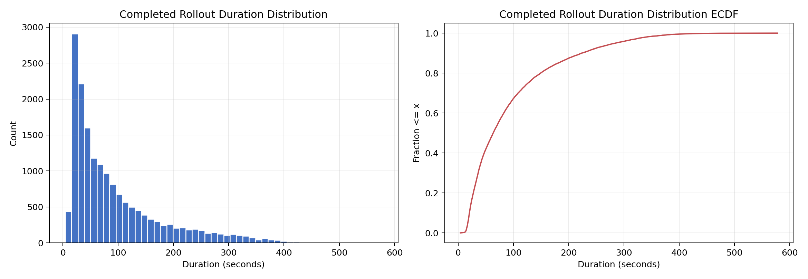
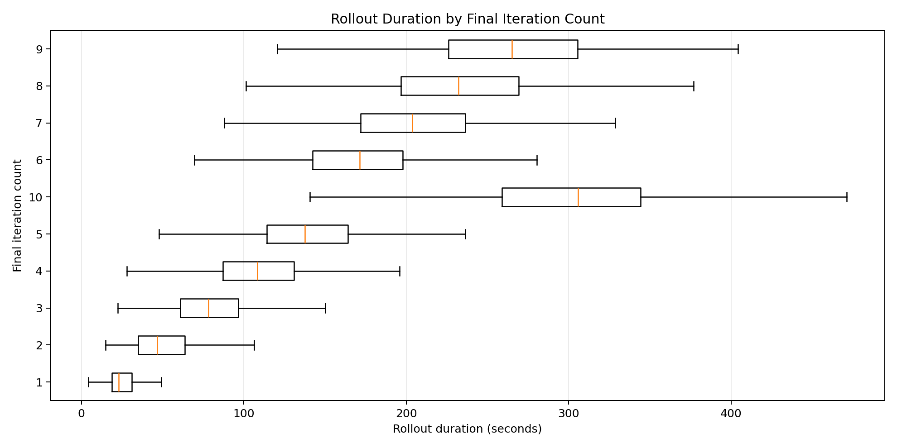
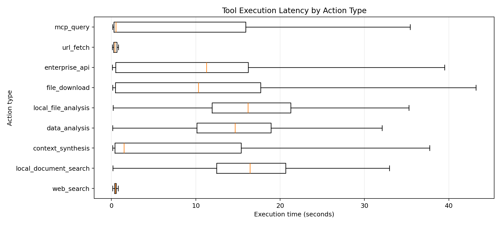
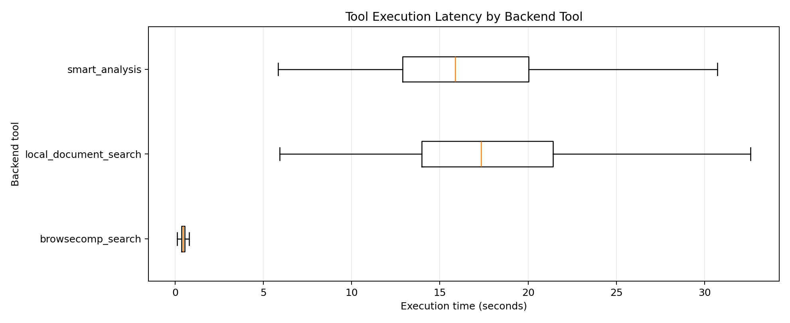

Runtime Analysis Viewer
Run: privacy_agent_qwen3_8b_no_plan_companyctx_planningonly_v1
This viewer is generated from the saved actor logs and per-rollout session artifacts. Tool timings are exact at the action level; LLM timings are exact overall but only prompt sizes are attributable to specific call types because the actor logs request durations without request IDs under concurrency.
Overview Plots
These are the quickest plots to check for overall throughput shape, rollout duration, and how often the agent keeps iterating.
LLM Latency Distribution
Overall LLM request latency. Exact latency by log_name is not recoverable from the concurrent actor logs.

Rollout Duration Distribution
Completed rollout wall-clock durations, filtered to rollouts with a final report artifact.


Iteration Count Distribution
Final iteration counts across completed rollouts.

Actions Per Rollout
How many tool actions each completed rollout executed before producing a report.

Context + Iteration Behavior
This section is usually the most useful for explaining why the run feels slow. It focuses on prompt size and how each extra iteration adds wall time.
Prompt Tokens by LLM Call Type
Large adaptive prompts dominate; the second panel now shows a median token breakdown by prompt section instead of a fraction.

Rollout Duration by Final Iteration
Completed rollout time split by how many iterations the agent ended up using.


Median Time per Iteration
Median wall time per iteration, split into tool execution versus residual LLM and orchestration time.

LLM Token Usage
These views use the explicit `privacy_agent llm call summary` lines emitted by the rollout adapter. They show response tokens and aggregate token volume by call type and rollout.
Response Token Distribution
Overall response-token distribution across logged privacy-agent LLM calls.
This run does not have per-call LLM token logs, so response-token plots are unavailable.
Response Tokens by LLM Call Type
Per-call response-token distribution grouped by log_name.
This run does not have per-call LLM token logs, so response-token plots are unavailable.
Token Totals by LLM Call Type
Aggregate prompt versus response token volume for the most expensive call types.
This run does not have per-call LLM token logs, so token-total plots are unavailable.
Token Totals by Rollout
Aggregate prompt versus response token volume for the most token-heavy completed rollouts.
This run does not have per-call LLM token logs, so token-total plots are unavailable.
Reward Spot Checks
These views recompute reward from the saved report answers against the dataset ground truth, then show a reproducible random sample of rollout reports for manual inspection.
Rollout Reward Distribution
Reward counts recomputed from saved reports and dataset ground truth.

Rollout Reward Stats
| Statistic | Reward |
|---|---|
| count | 17,069 |
| mean | 0.044 |
| median | 0.000 |
| min | 0.000 |
| p90 | 0.200 |
| p95 | 0.333 |
| p99 | 0.667 |
| max | 1.000 |
Reward Distribution
| Reward | Rollouts |
|---|---|
| 0.00 | 15,176 |
| 0.20 | 900 |
| 0.25 | 4 |
| 0.33 | 154 |
| 0.40 | 34 |
| 0.50 | 423 |
| 0.67 | 243 |
| 1.00 | 135 |
DR0001_25cbf112_d8e69ed4 | reward=0.000 | hops=0/4
Task: DR0001
Iterations: 2 | Actions: 5 | Duration: 43.65 s
Predicted final answer: NOT_FOUND
Ground-truth final answer: Q2 2022
Question preview: 1. In what year did Chaad complete a residency with the Contemporary Art? 2. In what quarter of (1) did Lee's Market launch its LED lighting retrofit program? 3. What percentage reduction in overall lighting energy expenditure resulted from the initiative launched in (2)? 4 (final). In which quarter did Lee's Market achieve a (3) reduction in transit times?
| Hop | Predicted | Ground Truth | Correct | Match |
|---|---|---|---|---|
| 1 | NOT_FOUND | 2022 | false | 0.000 |
| 2 | NOT_FOUND | Q3 2022 | false | 0.000 |
| 3 | NOT_FOUND | 12% | false | 0.000 |
| 4 | NOT_FOUND | Q2 2022 | false | 0.000 |
Report path: /mnt/llmd/results/exps/alexg/reason/privacy_agent_qwen3_8b_no_plan_companyctx_planningonly_v1/privacy_agent_runs/DR0001_25cbf112_d8e69ed4/workspace/research_report_20260414_233112.md
# Research Findings: 1. In what year did Chaad complete a residency with the Contemporary Art? 2. In what quarter of (1) did Lee's Market launch its LED lighting retrofit program? 3. What percentage reduction in overall lighting energy expenditure resulted from the initiative launched in (2)? 4 (final). In which quarter did Lee's Market achieve a (3) reduction in transit times? <think> Okay, let's tackle these questions one by one. The user wants short answers with justifications, each in 1-5 words. First, I need to check the available evidence. Wait, the available evidence is empty. That's a problem. Without any data, how can I answer these? Looking back, the original research questions refer to Chaad's residency with Contemporary Art, Lee's Market's LED program launch quarter, the percentage reduction from that initiative, and the quarter when transit times improved by that percentage. But since there's no evidence provided, all the answers can't be determined. So for each question, I should respond with NOT_FOUND. The justifications need to mention the lack of evidence. Let me make sure each answer follows the rules. No markdown, just the required lines. Alright, that's the only way to go here. </think> ANSWER_1: NOT_FOUND JUSTIFICATION_1: No evidence provided ANSWER_2: NOT_FOUND JUSTIFICATION_2: No evidence provided ANSWER_3: NOT_FOUND JUSTIFICATION_3: No evidence provided ANSWER_4: NOT_FOUND JUSTIFICATION_4: No evidence provided ANSWER_FINAL: NOT_FOUND JUSTIFICATION_FINAL: Evidence is missing for all sub-questions <|im_end|>
DR0002_4b9e3b87_340e70c9 | reward=0.000 | hops=0/3
Task: DR0002
Iterations: 1 | Actions: 3 | Duration: 21.79 s
Predicted final answer: NOT_FOUND
Ground-truth final answer: 500
Question preview: 1. What percentage of training sessions at Lee's Market were conducted using the proprietary online learning management system as of Q2 2025? 2. As of which quarter in 2025 were (1) of training sessions conducted using the proprietary online learning management system? 3 (final). How many new applications did Lee's Market receive in (2)?
| Hop | Predicted | Ground Truth | Correct | Match |
|---|---|---|---|---|
| 1 | NOT_FOUND | 75% | false | 0.000 |
| 2 | NOT_FOUND | Q2 2025 | false | 0.000 |
| 3 | NOT_FOUND | 500 | false | 0.000 |
Report path: /mnt/llmd/results/exps/alexg/reason/privacy_agent_qwen3_8b_no_plan_companyctx_planningonly_v1/privacy_agent_runs/DR0002_4b9e3b87_340e70c9/workspace/research_report_20260414_205600.md
# Research Findings: 1. What percentage of training sessions at Lee's Market were conducted using the proprietary online learning management system as of Q2 2025? 2. As of which quarter in 2025 were (1) of training sessions conducted using the proprietary online learning management system? 3 (final). How many new applications did Lee's Market receive in (2)? <think> Okay, let's tackle this step by step. The user has provided three questions related to Lee's Market's training sessions and new applications. The available evidence is empty, so I need to check if there's any data to reference. First, the original questions are about percentages of training sessions using their LMS in Q2 2025, the quarter when (1) of the sessions were conducted, and the number of new applications in that quarter. But since there's no evidence provided, I can't find any data points. For Q1, without any numbers, the answer would be NOT_FOUND. Same for Q2, which refers to the quarter mentioned in Q1, but since Q1's answer isn't known, Q2 can't be answered. Q3 depends on Q2's answer, which is also missing. Each justification needs a DOC reference, but there are no docs. So all answers should be NOT_FOUND. The final answer should explain that the sub-answers can't be combined due to missing data. I need to make sure each answer is 1-5 words and the justifications cite the docs, even if they don't exist. But since there's no evidence, the correct response is NOT_FOUND for all. </think> ANSWER_1: NOT_FOUND JUSTIFICATION_1: No evidence provided ANSWER_2: NOT_FOUND JUSTIFICATION_2: No evidence provided ANSWER_3: NOT_FOUND JUSTIFICATION_3: No evidence provided ANSWER_FINAL: NOT_FOUND JUSTIFICATION_FINAL: Sub-answers cannot be determined due to lack of evidence <|im_end|>
DR0002_4b9e3b87_bc6da6e1 | reward=0.000 | hops=0/3
Task: DR0002
Iterations: 1 | Actions: 3 | Duration: 5.036 s
Predicted final answer: NOT_FOUND
Ground-truth final answer: 500
Question preview: 1. What percentage of training sessions at Lee's Market were conducted using the proprietary online learning management system as of Q2 2025? 2. As of which quarter in 2025 were (1) of training sessions conducted using the proprietary online learning management system? 3 (final). How many new applications did Lee's Market receive in (2)?
| Hop | Predicted | Ground Truth | Correct | Match |
|---|---|---|---|---|
| 1 | NOT_FOUND | 75% | false | 0.000 |
| 2 | NOT_FOUND | Q2 2025 | false | 0.000 |
| 3 | NOT_FOUND | 500 | false | 0.000 |
Report path: /mnt/llmd/results/exps/alexg/reason/privacy_agent_qwen3_8b_no_plan_companyctx_planningonly_v1/privacy_agent_runs/DR0002_4b9e3b87_bc6da6e1/workspace/research_report_20260415_065059.md
# Research Findings: 1. What percentage of training sessions at Lee's Market were conducted using the proprietary online learning management system as of Q2 2025? 2. As of which quarter in 2025 were (1) of training sessions conducted using the proprietary online learning management system? 3 (final). How many new applications did Lee's Market receive in (2)? <think> Okay, let's tackle these questions. First, I need to understand each one and see what information is needed. Question 1 asks for the percentage of training sessions using the proprietary LMS in Q2 2025. But the available evidence is empty. So there's no data here. I'll have to mark that as NOT_FOUND. Question 2 refers to quarter (2), which is probably linked to the previous answer. But since answer 1 is not found, maybe it's a typo or misreference. Wait, the sub-question Q2 is about the quarter when (1) of training sessions were conducted. But without data for Q1, this is also not possible. So answer 2 would be NOT_FOUND as well. Question 3 asks for the number of new applications in (2), which is the quarter from Q2. Since we don't have data for Q2's applications, this is also not found. Wait, but the user mentioned the task context and evidence. But the evidence list is empty. So all answers can't be determined. So all answers would be NOT_FOUND. But let me check the rules again. If there's no evidence, the answer is NOT_FOUND. So each answer would be NOT_FOUND with justifications citing the lack of evidence. </think> ANSWER_1: NOT_FOUND JUSTIFICATION_1: No evidence provided ANSWER_2: NOT_FOUND JUSTIFICATION_2: No evidence provided ANSWER_3: NOT_FOUND JUSTIFICATION_3: No evidence provided ANSWER_FINAL: NOT_FOUND JUSTIFICATION_FINAL: No evidence provided <|im_end|>
DR0003_4c20816c_8f1e66a4 | reward=0.000 | hops=0/2
Task: DR0003
Iterations: 1 | Actions: 2 | Duration: 21.46 s
Predicted final answer: NOT_FOUND
Ground-truth final answer: the end of Q4 2024
Question preview: 1. What was the renewable energy usage percentage at Lee's Market as of Q1 2024? 2 (final). By when does Lee's Market anticipate achieving a (1) improvement in website performance?
| Hop | Predicted | Ground Truth | Correct | Match |
|---|---|---|---|---|
| 1 | NOT_FOUND | 25% | false | 0.000 |
| 2 | NOT_FOUND | the end of Q4 2024 | false | 0.000 |
Report path: /mnt/llmd/results/exps/alexg/reason/privacy_agent_qwen3_8b_no_plan_companyctx_planningonly_v1/privacy_agent_runs/DR0003_4c20816c_8f1e66a4/workspace/research_report_20260415_020100.md
# Research Findings: 1. What was the renewable energy usage percentage at Lee's Market as of Q1 2024? 2 (final). By when does Lee's Market anticipate achieving a (1) improvement in website performance? <think> Okay, let's see. The user has provided two questions about Lee's Market. The first is about the renewable energy usage percentage as of Q1 2024. The second asks by when they expect a (1) improvement in website performance. Looking at the available evidence, there's nothing provided. The user mentioned that the available evidence is an empty list. So for both questions, there's no data to reference. For the first question, since there's no info on renewable energy usage, the answer should be NOT_FOUND. Same for the second question about website performance improvement. The user might have intended to include some documents but forgot, but based on the given info, I can't find any answers. I need to make sure each answer is short and exact. The rules say if you can't determine, use NOT_FOUND. Both questions fall into that category here. The justifications need to mention the lack of evidence, but since there's no DOC, maybe just note that. Wait, the rules say each justification must include a DOC if there's evidence. Since there's no evidence, maybe just say "No evidence provided" but the example might not have that. Wait, the user's instructions say if you can't determine, write NOT_FOUND. So I'll have to do that for both answers. So the final answers would be NOT_FOUND for both, with justifications that there's no available evidence. The final answer combines them, but since both are not found, the final justification would explain that. </think> ANSWER_1: NOT_FOUND JUSTIFICATION_1: No evidence provided [DOC:] ANSWER_2: NOT_FOUND JUSTIFICATION_2: No evidence provided [DOC:] ANSWER_FINAL: NOT_FOUND JUSTIFICATION_FINAL: No evidence available for either question.<|im_end|>
DR0003_98338d1b_bae130df | reward=0.000 | hops=0/3
Task: DR0003
Iterations: 1 | Actions: 2 | Duration: 16.45 s
Predicted final answer: NOT_FOUND
Ground-truth final answer: 212500
Question preview: 1. What was the reduction in false positives after implementing the new threat detection system at Lee's Market in Q4 2022? 2. What year did Lee's Market reduce false positives by (1)? 3 (final). What was the monthly average facility maintenance cost for Q4 of (2)?
| Hop | Predicted | Ground Truth | Correct | Match |
|---|---|---|---|---|
| 1 | NOT_FOUND | 40% | false | 0.000 |
| 2 | NOT_FOUND | 2022 | false | 0.000 |
| 3 | NOT_FOUND | 212500 | false | 0.000 |
Report path: /mnt/llmd/results/exps/alexg/reason/privacy_agent_qwen3_8b_no_plan_companyctx_planningonly_v1/privacy_agent_runs/DR0003_98338d1b_bae130df/workspace/research_report_20260415_051736.md
# Research Findings: 1. What was the reduction in false positives after implementing the new threat detection system at Lee's Market in Q4 2022? 2. What year did Lee's Market reduce false positives by (1)? 3 (final). What was the monthly average facility maintenance cost for Q4 of (2)? <think> Okay, let's tackle these questions step by step. First, the original research questions are about Lee's Market's reduction in false positives after implementing a new threat detection system in Q4 2022. The sub-questions are Q1, Q2, and Q3. Looking at the available evidence, it's empty. That's a problem. Without any data or documents provided, I can't find specific numbers or details. For Q1, the reduction in false positives would typically be a percentage or a number. But since there's no evidence, I can't answer that. Similarly, Q2 asks for the year, which is mentioned as Q4 2022 in the original question. So the year would be 2022. But since there's no support in the evidence, maybe it's still NOT_FOUND. Q3 refers to the monthly average facility maintenance cost for Q4 of the year mentioned in Q2 (which would be 2022). Again, without any data, I can't provide a number. Since all the required evidence is missing, each answer would be NOT_FOUND. The final answer would also be NOT_FOUND because the sub-answers can't be determined. I need to make sure each justification includes a , but since there are no docs, maybe the system expects me to use a placeholder or note that evidence is missing. However, according to the rules, if there's no evidence, I should write NOT_FOUND. Wait, the rules say: "If you cannot determine the answer, write: NOT_FOUND". So each answer should be NOT_FOUND. The justifications would have to mention that no evidence is available. But the instructions say to include when evidence exists. Since there's no evidence, maybe the justifications can't cite any docs. But the user might expect that even if there's no doc, we still need to follow the
DR0026_080d67f1_92041d97 | reward=0.200 | hops=1/5
Task: DR0026
Iterations: 1 | Actions: 1 | Duration: 19.82 s
Predicted final answer: NOT_FOUND
Ground-truth final answer: 30%
Question preview: 1. According to the Corporate Transparency Act information, until what year must domestic and foreign entities formed or registered before January 1, 2024, file their initial beneficial ownership information report with FinCEN? 2. What is the title of the customer service analysis report covering the first months of (1)? 3. What university's innovation campus building was completed in (2)? 4. What year is (3)'s budget of $2.06 billion associated with? 5 (final). What percentage of respondents preferred online shopping with home delivery in the survey conducted in June (4)?
| Hop | Predicted | Ground Truth | Correct | Match |
|---|---|---|---|---|
| 1 | 2025 | 2025 | true | 1.000 |
| 2 | NOT_FOUND | February 2025 | false | 0.000 |
| 3 | NOT_FOUND | Virginia Tech | false | 0.000 |
| 4 | NOT_FOUND | 2023 | false | 0.000 |
| 5 | 30% | false | 0.000 |
Report path: /mnt/llmd/results/exps/alexg/reason/privacy_agent_qwen3_8b_no_plan_companyctx_planningonly_v1/privacy_agent_runs/DR0026_080d67f1_92041d97/workspace/research_report_20260414_195936.md
# Research Findings: 1. According to the Corporate Transparency Act information, until what year must domestic and foreign entities formed or registered before January 1, 2024, file their initial beneficial ownership information report with FinCEN? 2. What is the title of the customer service analysis report covering the first months of (1)? 3. What university's innovation campus building was completed in (2)? 4. What year is (3)'s budget of $2.06 billion associated with? 5 (final). What percentage of respondents preferred online shopping with home delivery in the survey conducted in June (4)? <think> Okay, let me tackle these questions one by one. Starting with Q1: The question is about the year until which entities formed before January 1, 2024, must file their BOI reports. Looking at the evidence, the third document mentions that companies formed before January 1, 2024, have until January 1, 2025. So the answer should be 2025. Q2 asks for the title of the customer service analysis report covering the first months of (1). Wait, (1) refers to the year from Q1, which is 2025. But looking through the evidence, I don't see any mention of a customer service report title. The documents talk about the CTA and BOI reporting but not a specific report title. Maybe there's a missing link here. Hmm, maybe the first document mentions a report? Let me check again. The first document's content doesn't mention a title. The second document also doesn't. The third document talks about the CTA but not a report title. So maybe this is NOT_FOUND. But the user might have intended something else. Wait, perhaps the answer is in another part? I don't see it. So I have to go with NOT_FOUND. Q3: The university's innovation campus completed in (2). But since (2) is not found, this is dependent. If (2) is not known, then this is also NOT_FOUND. Q4: The year associated with the budget $2.06 billion for (3). Again, since (3) is unknown, this is NOT_FOUND. Q5: Percentage of respondents
DR0044_85ea1c50_2af5b410 | reward=0.000 | hops=0/4
Task: DR0044
Iterations: 2 | Actions: 4 | Duration: 64.58 s
Predicted final answer: NOT_FOUND
Ground-truth final answer: John Doe
Question preview: 1. What was the percentage of users who found the website navigation intuitive at MediConn Solutions in 2024? 2. What year is associated with the (1) sensitivity of lymphoscintigraphy for lymphedema diagnosis? 3. Where was the third edition of Plastic and Reconstructive Surgery Board Review published in (2)? 4 (final). What meeting does John schedule to discuss leveraging the growing demand for virtual healthcare services in (3)?
| Hop | Predicted | Ground Truth | Correct | Match |
|---|---|---|---|---|
| 1 | NOT_FOUND | 92% | false | 0.000 |
| 2 | NOT_FOUND | 2016 | false | 0.000 |
| 3 | NOT_FOUND | Ontario | false | 0.000 |
| 4 | NOT_FOUND | John Doe | false | 0.000 |
Report path: /mnt/llmd/results/exps/alexg/reason/privacy_agent_qwen3_8b_no_plan_companyctx_planningonly_v1/privacy_agent_runs/DR0044_85ea1c50_2af5b410/workspace/research_report_20260415_122740.md
# Research Findings: 1. What was the percentage of users who found the website navigation intuitive at MediConn Solutions in 2024? 2. What year is associated with the (1) sensitivity of lymphoscintigraphy for lymphedema diagnosis? 3. Where was the third edition of Plastic and Reconstructive Surgery Board Review published in (2)? 4 (final). What meeting does John schedule to discuss leveraging the growing demand for virtual healthcare services in (3)? <think> Okay, let's tackle these questions one by one. First, the user wants each answer to be short and exact, between 1-5 words, with a justification citing the evidence. The company is MediConn Solutions, and the context is about their virtual healthcare services. Starting with Q1: What was the percentage of users who found the website navigation intuitive at MediConn Solutions in 2024? The available evidence is empty, so there's no data here. I'll have to mark this as NOT_FOUND. Q2: What year is associated with the (1) sensitivity of lymphoscintigraphy for lymphedema diagnosis? Again, the evidence is empty. There's no mention of any year or study related to lymphoscintigraphy's sensitivity. So another NOT_FOUND. Q3: Where was the third edition of Plastic and Reconstructive Surgery Board Review published in (2)? The question refers to "in (2)", which might be a typo or reference to a previous answer. But since Q2 is not found, this might be independent. However, no evidence is provided, so NOT_FOUND here as well. Q4: What meeting does John schedule to discuss leveraging the growing demand for virtual healthcare services in (3)? The (3) likely refers to the answer from Q3. But since Q3 is not found, and there's no info on John or meetings, this is also NOT_FOUND. Since all the sub-questions don't have any evidence provided in the available data, all answers should be NOT_FOUND. The final answer combines them, but since each is not found, the final justification would explain that no evidence was available for an
DR0073_fe2c0014_586e8f52 | reward=0.000 | hops=0/2
Task: DR0073
Iterations: 1 | Actions: 2 | Duration: 13.67 s
Predicted final answer: NOT_FOUND
Ground-truth final answer: 12%
Question preview: 1. How many weekends did The Lord of the Rings: The Return of the King spend in the top 10 domestically? 2 (final). What aspect of the 2023 vehicle performance saw a (1)% improvement year over year?
| Hop | Predicted | Ground Truth | Correct | Match |
|---|---|---|---|---|
| 1 | NOT_FOUND | 12 | false | 0.000 |
| 2 | NOT_FOUND | 12% | false | 0.000 |
Report path: /mnt/llmd/results/exps/alexg/reason/privacy_agent_qwen3_8b_no_plan_companyctx_planningonly_v1/privacy_agent_runs/DR0073_fe2c0014_586e8f52/workspace/research_report_20260415_052142.md
# Research Findings: 1. How many weekends did The Lord of the Rings: The Return of the King spend in the top 10 domestically? 2 (final). What aspect of the 2023 vehicle performance saw a (1)% improvement year over year? <think> Okay, let's tackle these questions. Starting with Q1: How many weekends did The Lord of the Rings: The Return of the King spend in the top 10 domestically? Hmm, I need to find the number of weekends. The original research question mentions "domestically," so that's the US box office. Wait, but the available evidence is empty. Oh, right, the user said "Available Evidence: []" which means there's no data provided. So I can't find the answer here. Maybe the first answer is NOT_FOUND. Then Q2: What aspect of the 2023 vehicle performance saw a (1)% improvement year over year? The company is Elexion Automotive, which makes electric vehicles. The question mentions a 1% improvement. But again, no evidence is given. So both answers can't be determined. Since there's no evidence provided for either question, both answers should be NOT_FOUND. The final answer would combine them, but since there's no data, it's not possible. So I need to state NOT_FOUND for both. </think> ANSWER_1: NOT_FOUND JUSTIFICATION_1: No evidence provided ANSWER_2: NOT_FOUND JUSTIFICATION_2: No evidence provided ANSWER_FINAL: NOT_FOUND JUSTIFICATION_FINAL: Sub-answers rely on missing evidence <|im_end|>
Tool Timing
These plots use per-action execution times stored in each rollout's final action plan, so this breakdown is much more precise than the text logs alone.
Tool Latency by Action Type
Distribution of per-action execution time using action categories from the final action plan.


Tool Latency by Backend
Distribution of execution time grouped by the backend tool actually used.


Tool Counts by Action Type
Volume of completed tool calls by action type.

Tool Counts by Backend
Volume of completed tool calls by backend tool.

Summary Tables
Counts
| Metric | Value |
|---|---|
| llm_requests | 124,462 |
| llm_call_records | 0 |
| prompt_records | 46,564 |
| reward_records | 17,069 |
| rollouts_all | 17,088 |
| rollouts_completed_with_report | 17,069 |
| actions_completed_with_report | 95,098 |
| iteration_records_completed_with_report | 57,393 |
LLM Request Latency
| Statistic | Seconds |
|---|---|
| count | 124,462 |
| mean | 15.16 |
| median | 13.73 |
| min | 0.060 |
| p90 | 25.10 |
| p95 | 30.36 |
| p99 | 42.84 |
| max | 75.54 |
Logged Prompt Tokens
| Statistic | Tokens |
|---|---|
| count | 46,564 |
| mean | 14,181.25 |
| median | 12,939.00 |
| min | 4,096 |
| p90 | 24,311.70 |
| p95 | 26,783.00 |
| p99 | 30,807.00 |
| max | 47,463 |
Logged Response Tokens
| Statistic | Tokens |
|---|---|
| count | 0 |
Logged Total Tokens
| Statistic | Tokens |
|---|---|
| count | 0 |
Rollout Reward
| Statistic | Reward |
|---|---|
| count | 17,069 |
| mean | 0.044 |
| median | 0.000 |
| min | 0.000 |
| p90 | 0.200 |
| p95 | 0.333 |
| p99 | 0.667 |
| max | 1.000 |
Completed Rollout Duration
| Statistic | Seconds |
|---|---|
| count | 17,069 |
| mean | 94.26 |
| median | 63.50 |
| min | 4.355 |
| p90 | 223.79 |
| p95 | 284.95 |
| p99 | 371.84 |
| max | 577.45 |
LLM Token Usage by Call Type
| Log name | call_count | captured_call_count | prompt_tokens | response_tokens | total_tokens | mean_prompt_tokens | mean_response_tokens |
|---|---|---|---|---|---|---|---|
| No data | |||||||
LLM Token Usage by Rollout
| Rollout | call_count | captured_call_count | prompt_tokens | response_tokens | total_tokens | mean_prompt_tokens | mean_response_tokens |
|---|---|---|---|---|---|---|---|
| No data | |||||||
Completed Action Execution
| Statistic | Seconds |
|---|---|
| count | 95,098 |
| mean | 6.086 |
| median | 0.530 |
| min | 0.003 |
| p90 | 19.56 |
| p95 | 23.82 |
| p99 | 34.82 |
| max | 99.31 |
Iteration Count Distribution
| Final iteration | Rollouts |
|---|---|
| 1 | 4,554 |
| 2 | 4,230 |
| 3 | 2,470 |
| 4 | 1,630 |
| 5 | 1,098 |
| 6 | 781 |
| 7 | 550 |
| 8 | 413 |
| 9 | 311 |
| 10 | 1,032 |
Prompt Count by Log Name
| Log name | Prompt summaries |
|---|---|
| adaptive_iter0 | 17,056 |
| adaptive_iter1 | 10,702 |
| adaptive_iter2 | 5,990 |
| adaptive_iter3 | 3,910 |
| adaptive_iter4 | 2,718 |
| adaptive_iter5 | 2,026 |
| adaptive_iter6 | 1,508 |
| adaptive_iter7 | 1,119 |
| adaptive_iter8 | 869 |
| adaptive_iter9 | 641 |
| analysis_synthesis | 21 |
| analysis_final_synthesis | 4 |
Action Timing by Type
| Action type | count | mean | median | p90 | p95 | p99 | max |
|---|---|---|---|---|---|---|---|
| web_search | 57,395 | 0.840 | 0.456 | 0.684 | 0.843 | 16.46 | 76.85 |
| local_document_search | 16,191 | 16.33 | 16.43 | 25.82 | 29.86 | 39.24 | 66.47 |
| context_synthesis | 7,521 | 8.503 | 1.497 | 19.94 | 24.09 | 34.91 | 76.64 |
| data_analysis | 6,690 | 14.65 | 14.65 | 25.53 | 31.09 | 43.79 | 99.31 |
| local_file_analysis | 4,761 | 16.62 | 16.18 | 28.18 | 33.46 | 43.46 | 65.89 |
| file_download | 1,825 | 10.24 | 10.32 | 23.32 | 28.92 | 41.50 | 57.66 |
| enterprise_api | 410 | 10.21 | 11.27 | 20.56 | 23.57 | 37.46 | 46.81 |
| url_fetch | 157 | 6.121 | 0.419 | 18.28 | 38.49 | 55.54 | 71.41 |
| mcp_query | 148 | 8.565 | 0.530 | 22.34 | 25.88 | 32.62 | 70.01 |
Action Timing by Backend Tool
| Backend | count | mean | median | p90 | p95 | p99 | max |
|---|---|---|---|---|---|---|---|
| browsecomp_search | 64,742 | 0.464 | 0.450 | 0.652 | 0.750 | 1.077 | 9.918 |
| local_document_search | 17,282 | 18.45 | 17.34 | 26.74 | 30.91 | 41.13 | 66.47 |
| smart_analysis | 13,074 | 17.58 | 15.87 | 26.86 | 32.22 | 44.72 | 99.31 |
Preview: rollouts.csv
| rollout_id | has_report | report_path | start_timestamp | end_timestamp | duration_s | current_iteration | max_iterations | total_actions | completed_actions | failed_actions | pending_actions | tool_exec_time_s | non_tool_time_s |
|---|---|---|---|---|---|---|---|---|---|---|---|---|---|
| DR0001_06a7f3db_004c6108 | true | /mnt/llmd/results/exps/alexg/reason/privacy_agent_qwen3_8b_no_plan_companyctx_planningonly_v1/privacy_agent_runs/DR0001_06a7f3db_004c6108/workspace/research_report_20260415_081603.md | 2026-04-15T08:14:08.108107 | 2026-04-15T08:16:03 | 114.89 | 4 | 10 | 5 | 5 | 0 | 0 | 57.41 | 57.48 |
| DR0001_06a7f3db_00515dd3 | true | /mnt/llmd/results/exps/alexg/reason/privacy_agent_qwen3_8b_no_plan_companyctx_planningonly_v1/privacy_agent_runs/DR0001_06a7f3db_00515dd3/workspace/research_report_20260414_202354.md | 2026-04-14T20:23:05.366031 | 2026-04-14T20:23:54 | 48.63 | 3 | 10 | 4 | 4 | 0 | 0 | 1.420 | 47.21 |
| DR0001_06a7f3db_009d1729 | true | /mnt/llmd/results/exps/alexg/reason/privacy_agent_qwen3_8b_no_plan_companyctx_planningonly_v1/privacy_agent_runs/DR0001_06a7f3db_009d1729/workspace/research_report_20260414_223813.md | 2026-04-14T22:37:57.278725 | 2026-04-14T22:38:13 | 15.72 | 1 | 10 | 2 | 2 | 0 | 0 | 0.898 | 14.82 |
| DR0001_06a7f3db_01cbcacb | true | /mnt/llmd/results/exps/alexg/reason/privacy_agent_qwen3_8b_no_plan_companyctx_planningonly_v1/privacy_agent_runs/DR0001_06a7f3db_01cbcacb/workspace/research_report_20260414_230319.md | 2026-04-14T22:58:59.819177 | 2026-04-14T23:03:19 | 259.18 | 10 | 10 | 14 | 14 | 0 | 0 | 130.92 | 128.26 |
| DR0001_06a7f3db_01d5422e | true | /mnt/llmd/results/exps/alexg/reason/privacy_agent_qwen3_8b_no_plan_companyctx_planningonly_v1/privacy_agent_runs/DR0001_06a7f3db_01d5422e/workspace/research_report_20260414_225607.md | 2026-04-14T22:54:42.969969 | 2026-04-14T22:56:07 | 84.03 | 3 | 10 | 5 | 5 | 0 | 0 | 24.51 | 59.52 |
| DR0001_06a7f3db_038f9678 | true | /mnt/llmd/results/exps/alexg/reason/privacy_agent_qwen3_8b_no_plan_companyctx_planningonly_v1/privacy_agent_runs/DR0001_06a7f3db_038f9678/workspace/research_report_20260415_102951.md | 2026-04-15T10:27:08.037730 | 2026-04-15T10:29:51 | 162.96 | 3 | 10 | 5 | 5 | 0 | 0 | 87.61 | 75.35 |
| DR0001_06a7f3db_03b66b50 | true | /mnt/llmd/results/exps/alexg/reason/privacy_agent_qwen3_8b_no_plan_companyctx_planningonly_v1/privacy_agent_runs/DR0001_06a7f3db_03b66b50/workspace/research_report_20260414_234619.md | 2026-04-14T23:45:42.113172 | 2026-04-14T23:46:19 | 36.89 | 2 | 10 | 3 | 3 | 0 | 0 | 15.94 | 20.95 |
| DR0001_06a7f3db_03c25304 | true | /mnt/llmd/results/exps/alexg/reason/privacy_agent_qwen3_8b_no_plan_companyctx_planningonly_v1/privacy_agent_runs/DR0001_06a7f3db_03c25304/workspace/research_report_20260415_040011.md | 2026-04-15T03:59:32.652602 | 2026-04-15T04:00:11 | 38.35 | 1 | 10 | 2 | 2 | 0 | 0 | 22.89 | 15.46 |
| DR0001_06a7f3db_03c42d65 | true | /mnt/llmd/results/exps/alexg/reason/privacy_agent_qwen3_8b_no_plan_companyctx_planningonly_v1/privacy_agent_runs/DR0001_06a7f3db_03c42d65/workspace/research_report_20260414_195811.md | 2026-04-14T19:57:39.594670 | 2026-04-14T19:58:11 | 31.41 | 1 | 10 | 2 | 2 | 0 | 0 | 1.025 | 30.38 |
| DR0001_06a7f3db_03e8739e | true | /mnt/llmd/results/exps/alexg/reason/privacy_agent_qwen3_8b_no_plan_companyctx_planningonly_v1/privacy_agent_runs/DR0001_06a7f3db_03e8739e/workspace/research_report_20260415_040132.md | 2026-04-15T03:59:29.365207 | 2026-04-15T04:01:32 | 122.63 | 5 | 10 | 6 | 6 | 0 | 0 | 56.19 | 66.44 |
| DR0001_06a7f3db_03ef5abf | true | /mnt/llmd/results/exps/alexg/reason/privacy_agent_qwen3_8b_no_plan_companyctx_planningonly_v1/privacy_agent_runs/DR0001_06a7f3db_03ef5abf/workspace/research_report_20260415_024424.md | 2026-04-15T02:41:15.681616 | 2026-04-15T02:44:24 | 188.32 | 8 | 10 | 10 | 10 | 0 | 0 | 88.66 | 99.66 |
| DR0001_06a7f3db_03ff20b0 | true | /mnt/llmd/results/exps/alexg/reason/privacy_agent_qwen3_8b_no_plan_companyctx_planningonly_v1/privacy_agent_runs/DR0001_06a7f3db_03ff20b0/workspace/research_report_20260414_214158.md | 2026-04-14T21:41:42.390175 | 2026-04-14T21:41:58 | 15.61 | 1 | 10 | 2 | 2 | 0 | 0 | 1.214 | 14.40 |
| DR0001_06a7f3db_043b6c42 | true | /mnt/llmd/results/exps/alexg/reason/privacy_agent_qwen3_8b_no_plan_companyctx_planningonly_v1/privacy_agent_runs/DR0001_06a7f3db_043b6c42/workspace/research_report_20260414_234700.md | 2026-04-14T23:44:09.904296 | 2026-04-14T23:47:00 | 170.10 | 5 | 10 | 8 | 8 | 0 | 0 | 93.51 | 76.59 |
| DR0001_06a7f3db_054f91e8 | true | /mnt/llmd/results/exps/alexg/reason/privacy_agent_qwen3_8b_no_plan_companyctx_planningonly_v1/privacy_agent_runs/DR0001_06a7f3db_054f91e8/workspace/research_report_20260415_113429.md | 2026-04-15T11:32:25.067770 | 2026-04-15T11:34:29 | 123.93 | 4 | 10 | 7 | 7 | 0 | 0 | 54.71 | 69.22 |
| DR0001_06a7f3db_059c398d | true | /mnt/llmd/results/exps/alexg/reason/privacy_agent_qwen3_8b_no_plan_companyctx_planningonly_v1/privacy_agent_runs/DR0001_06a7f3db_059c398d/workspace/research_report_20260414_235228.md | 2026-04-14T23:52:08.654758 | 2026-04-14T23:52:28 | 19.35 | 1 | 10 | 2 | 2 | 0 | 0 | 1.235 | 18.11 |
Preview: actions.csv
| rollout_id | has_report | action_id | action_type | backend_tool | status | execution_time_s | iteration_completed | completion_time | created_from_research_step | preferred_tool |
|---|---|---|---|---|---|---|---|---|---|---|
| DR0001_06a7f3db_004c6108 | true | fallback_action_0 | local_document_search | local_document_search | completed | 17.42 | 0 | 2026-04-15T08:14:25.529497 | fallback_generation | LocalFileSearchTool |
| DR0001_06a7f3db_004c6108 | true | fallback_action_1 | web_search | browsecomp_search | completed | 1.267 | 0 | 2026-04-15T08:14:26.796163 | fallback_generation | BrowseCompSearchTool |
| DR0001_06a7f3db_004c6108 | true | adaptive_0_web_search_search_for_lee'_0 | web_search | browsecomp_search | completed | 0.419 | 1 | 2026-04-15T08:14:38.203536 | BrowseCompSearchTool | |
| DR0001_06a7f3db_004c6108 | true | adaptive_1_local_document_search_search_internal_0 | local_document_search | local_document_search | completed | 21.43 | 2 | 2026-04-15T08:15:09.299123 | LocalFileSearchTool | |
| DR0001_06a7f3db_004c6108 | true | adaptive_2_local_document_search_search_for_spec_0 | local_document_search | local_document_search | completed | 16.88 | 3 | 2026-04-15T08:15:43.197983 | LocalFileSearchTool | |
| DR0001_06a7f3db_00515dd3 | true | fallback_action_0 | web_search | browsecomp_search | completed | 0.498 | 0 | 2026-04-14T20:23:05.865895 | fallback_generation | BrowseCompSearchTool |
| DR0001_06a7f3db_00515dd3 | true | fallback_action_1 | web_search | browsecomp_search | completed | 0.444 | 0 | 2026-04-14T20:23:06.310560 | fallback_generation | BrowseCompSearchTool |
| DR0001_06a7f3db_00515dd3 | true | adaptive_0_web_search_search_for_lee'_0 | web_search | browsecomp_search | completed | 0.164 | 1 | 2026-04-14T20:23:17.333660 | BrowseCompSearchTool | |
| DR0001_06a7f3db_00515dd3 | true | adaptive_1_web_search_search_for_lee'_0 | web_search | browsecomp_search | completed | 0.313 | 2 | 2026-04-14T20:23:32.841272 | browsecomp_search | |
| DR0001_06a7f3db_009d1729 | true | fallback_action_0 | web_search | browsecomp_search | completed | 0.449 | 0 | 2026-04-14T22:37:57.729781 | fallback_generation | BrowseCompSearchTool |
| DR0001_06a7f3db_009d1729 | true | fallback_action_1 | web_search | browsecomp_search | completed | 0.449 | 0 | 2026-04-14T22:37:58.179318 | fallback_generation | BrowseCompSearchTool |
| DR0001_06a7f3db_01cbcacb | true | fallback_action_0 | web_search | browsecomp_search | completed | 0.491 | 0 | 2026-04-14T22:59:00.312350 | fallback_generation | BrowseCompSearchTool |
| DR0001_06a7f3db_01cbcacb | true | fallback_action_1 | web_search | browsecomp_search | completed | 0.410 | 0 | 2026-04-14T22:59:00.723068 | fallback_generation | BrowseCompSearchTool |
| DR0001_06a7f3db_01cbcacb | true | fallback_action_2 | local_document_search | local_document_search | completed | 21.59 | 0 | 2026-04-14T22:59:22.314985 | fallback_generation | LocalFileSearchTool |
| DR0001_06a7f3db_01cbcacb | true | adaptive_0_web_search_search_for_lee'_0 | web_search | browsecomp_search | completed | 0.385 | 1 | 2026-04-14T22:59:33.581539 | browsecomp_search |
Preview: iterations.csv
| rollout_id | has_report | iteration | action_count | wall_time_s | tool_time_s | non_tool_time_s |
|---|---|---|---|---|---|---|
| DR0001_06a7f3db_004c6108 | true | 0 | 2 | 18.69 | 18.69 | 0.002 |
| DR0001_06a7f3db_004c6108 | true | 1 | 1 | 11.41 | 0.419 | 10.99 |
| DR0001_06a7f3db_004c6108 | true | 2 | 1 | 31.10 | 21.43 | 9.670 |
| DR0001_06a7f3db_004c6108 | true | 3 | 1 | 33.90 | 16.88 | 17.02 |
| DR0001_06a7f3db_00515dd3 | true | 0 | 2 | 0.945 | 0.942 | 0.002 |
| DR0001_06a7f3db_00515dd3 | true | 1 | 1 | 11.02 | 0.164 | 10.86 |
| DR0001_06a7f3db_00515dd3 | true | 2 | 1 | 15.51 | 0.313 | 15.19 |
| DR0001_06a7f3db_009d1729 | true | 0 | 2 | 0.901 | 0.898 | 0.002 |
| DR0001_06a7f3db_01cbcacb | true | 0 | 3 | 22.50 | 22.49 | 0.003 |
| DR0001_06a7f3db_01cbcacb | true | 1 | 1 | 11.27 | 0.385 | 10.88 |
| DR0001_06a7f3db_01cbcacb | true | 2 | 1 | 26.68 | 16.41 | 10.27 |
| DR0001_06a7f3db_01cbcacb | true | 3 | 1 | 10.49 | 0.500 | 9.994 |
| DR0001_06a7f3db_01cbcacb | true | 4 | 2 | 16.25 | 0.502 | 15.75 |
| DR0001_06a7f3db_01cbcacb | true | 5 | 1 | 13.89 | 0.343 | 13.55 |
| DR0001_06a7f3db_01cbcacb | true | 6 | 1 | 22.59 | 11.36 | 11.23 |
Preview: prompt_records.csv
| timestamp | log_name | prompt_tokens | prompt_chars | latest_findings_tokens | latest_findings_chars | instructions_tokens | planning_context_tokens | task_definition_tokens | documents_or_evidence_tokens | reporting_context_tokens | other_tokens |
|---|---|---|---|---|---|---|---|---|---|---|---|
| 2026-04-14T19:35:22.720000 | adaptive_iter0 | 24,757 | 107,329 | 24,526 | 106,231 | 0 | 17 | 69 | 0 | 0 | 118 |
| 2026-04-14T19:35:23.363000 | adaptive_iter0 | 17,872 | 64,182 | 17,661 | 63,221 | 0 | 17 | 44 | 0 | 0 | 123 |
| 2026-04-14T19:35:24.396000 | adaptive_iter0 | 18,501 | 79,955 | 18,289 | 78,962 | 0 | 17 | 45 | 0 | 0 | 123 |
| 2026-04-14T19:35:24.623000 | adaptive_iter0 | 27,053 | 115,017 | 26,810 | 113,877 | 0 | 17 | 76 | 0 | 0 | 123 |
| 2026-04-14T19:35:24.827000 | adaptive_iter0 | 19,023 | 68,010 | 18,844 | 67,290 | 0 | 17 | 31 | 0 | 0 | 104 |
| 2026-04-14T19:35:25.123000 | adaptive_iter0 | 15,693 | 63,459 | 15,481 | 62,503 | 0 | 17 | 44 | 0 | 0 | 123 |
| 2026-04-14T19:35:25.520000 | adaptive_iter0 | 19,764 | 70,086 | 19,551 | 69,125 | 0 | 17 | 51 | 0 | 0 | 118 |
| 2026-04-14T19:35:25.541000 | adaptive_iter0 | 17,318 | 49,229 | 17,107 | 48,238 | 0 | 17 | 44 | 0 | 0 | 123 |
| 2026-04-14T19:35:26.760000 | adaptive_iter0 | 25,092 | 100,690 | 24,841 | 99,465 | 0 | 17 | 92 | 0 | 0 | 117 |
| 2026-04-14T19:35:27.493000 | adaptive_iter0 | 23,564 | 101,093 | 23,310 | 99,837 | 0 | 17 | 95 | 0 | 0 | 117 |
| 2026-04-14T19:35:28.254000 | adaptive_iter0 | 29,683 | 113,594 | 29,471 | 112,598 | 0 | 17 | 53 | 0 | 0 | 117 |
| 2026-04-14T19:35:32.723000 | adaptive_iter0 | 14,532 | 53,941 | 14,320 | 52,957 | 0 | 17 | 44 | 0 | 0 | 124 |
| 2026-04-14T19:35:35.080000 | adaptive_iter0 | 24,483 | 77,467 | 24,253 | 76,421 | 0 | 17 | 63 | 0 | 0 | 123 |
| 2026-04-14T19:35:36.184000 | adaptive_iter0 | 29,591 | 104,753 | 29,349 | 103,633 | 0 | 17 | 75 | 0 | 0 | 123 |
| 2026-04-14T19:35:37.571000 | adaptive_iter0 | 21,209 | 78,963 | 20,994 | 77,969 | 0 | 17 | 48 | 0 | 0 | 123 |
Preview: llm_call_records.csv
No rows.
Preview: llm_requests.csv
| timestamp | duration_s |
|---|---|
| 2026-04-14T19:35:20.960000 | 6.410 |
| 2026-04-14T19:35:21.087000 | 6.550 |
| 2026-04-14T19:35:22.068000 | 8.190 |
| 2026-04-14T19:35:22.129000 | 9.830 |
| 2026-04-14T19:35:22.515000 | 8.620 |
| 2026-04-14T19:35:22.812000 | 8.320 |
| 2026-04-14T19:35:22.949000 | 8.750 |
| 2026-04-14T19:35:23.209000 | 8.980 |
| 2026-04-14T19:35:23.789000 | 9.260 |
| 2026-04-14T19:35:23.830000 | 9.940 |
| 2026-04-14T19:35:24.473000 | 9.960 |
| 2026-04-14T19:35:24.821000 | 10.23 |
| 2026-04-14T19:35:25.707000 | 11.83 |
| 2026-04-14T19:35:26.891000 | 12.97 |
| 2026-04-14T19:35:29.227000 | 15.30 |
Preview: reward_records.csv
| rollout_id | task_id | chain_id | report_path | reward | correct_hops | total_hops | final_correct | final_match_score | iterations | total_actions | duration_s | predicted_final_answer | ground_truth_final_answer | predicted_answers_json | ground_truth_hops_json | per_hop_json | report_preview | task_question_preview | justifications_json |
|---|---|---|---|---|---|---|---|---|---|---|---|---|---|---|---|---|---|---|---|
| DR0001_06a7f3db_004c6108 | DR0001 | 06a7f3db | /mnt/llmd/results/exps/alexg/reason/privacy_agent_qwen3_8b_no_plan_companyctx_planningonly_v1/privacy_agent_runs/DR0001_06a7f3db_004c6108/workspace/research_report_20260415_081603.md | 0.000 | 0 | 2 | false | 0.000 | 4 | 5 | 114.89 | NOT_FOUND | Emily Patel | {"1": "NOT_FOUND", "2": "NOT_FOUND", "FINAL": "NOT_FOUND"} | [{"answer": "85%", "doc_id": "local/DR0001/IN001_pdf/food-safety-regulatory-compliance.md", "hop_number": 1, "hop_type": "L", "question": "What percentage of suppliers at Lee's Market had implemented corrective action procedures according to the quarterly review?"}, {"answer": "Emily Patel", "doc_id": "local/DR0001/IN011_roundcube/roundcube_email_20250818_112436.jsonl", "hop_number": 2, "hop_type": "L", "question": "Who reported that 85% of high-risk food suppliers are FSMA 204 compliant?"}] | [{"agent_answer": "NOT_FOUND", "correct": false, "doc_id": "local/DR0001/IN001_pdf/food-safety-regulatory-compliance.md", "ground_truth": "85%", "hop": 1, "match_score": 0.0}, {"agent_answer": "NOT_FOUND", "correct": false, "doc_id": "local/DR0001/IN011_roundcube/roundcube_email_20250818_112436.jsonl", "ground_truth": "Emily Patel", "hop": 2, "match_score": 0.0}] | # Research Findings: 1. What percentage of suppliers at Lee's Market had implemented corrective action procedures according to the quarterly review? 2 (final). Who reported that (1) of high-risk food suppliers are FSMA 204 compliant? <think> Okay, let's break this down. The user has two questions related to Lee's Market's suppliers and FSMA 204 compliance. First, they want the percentage of suppliers who implemented corrective action procedures based on the quarterly review. Looking at the available evidence, none of the documents provide this data. The AI syntheses mention that the PDFs can't be processed and the emails don't discuss suppliers or corrective actions. So, there's no info here. Second, they ask who reported that 1 of high-risk suppliers are FSMA 204 compliant. Again, the documents don't mention FSMA 204 compliance or any reports on high-risk suppliers. The emails talk about other topics like customer feedback and inventory systems. No one is reported to have made that statement. Since both questions can't be answered with the given evidence, the answers should be NOT_FOUND. The justifications need to cite the relevant documents that confirm the lack of data. All the syntheses point to the same conclusion about missing information. </think> ANSWER_1: NOT_FOUND JUSTIFICATION_1: No documents provide data on corrective action procedures implemented by suppliers. ANSWER_2: NOT_FOUND JUSTIFICATION_2: No documents mention FSMA 204 compliance status of high-risk suppliers or reporting entities. ANSWER_FINAL: NOT_FOUND JUSTIFICATION_FINAL: Both questions lack evidence in provided documents. <|im_end|> | 1. What percentage of suppliers at Lee's Market had implemented corrective action procedures according to the quarterly review? 2 (final). Who reported that (1) of high-risk food suppliers are FSMA 204 compliant? | {"1": "No documents provide data on corrective action procedures implemented by suppliers.", "2": "No documents mention FSMA 204 compliance status of high-risk suppliers or reporting entities.", "FINAL": "Both questions lack evidence in provided documents. <|im_end|>"} |
| DR0001_06a7f3db_00515dd3 | DR0001 | 06a7f3db | /mnt/llmd/results/exps/alexg/reason/privacy_agent_qwen3_8b_no_plan_companyctx_planningonly_v1/privacy_agent_runs/DR0001_06a7f3db_00515dd3/workspace/research_report_20260414_202354.md | 0.000 | 0 | 2 | false | 0.000 | 3 | 4 | 48.63 | NOT_FOUND | Emily Patel | {"1": "NOT_FOUND", "2": "NOT_FOUND", "FINAL": "NOT_FOUND"} | [{"answer": "85%", "doc_id": "local/DR0001/IN001_pdf/food-safety-regulatory-compliance.md", "hop_number": 1, "hop_type": "L", "question": "What percentage of suppliers at Lee's Market had implemented corrective action procedures according to the quarterly review?"}, {"answer": "Emily Patel", "doc_id": "local/DR0001/IN011_roundcube/roundcube_email_20250818_112436.jsonl", "hop_number": 2, "hop_type": "L", "question": "Who reported that 85% of high-risk food suppliers are FSMA 204 compliant?"}] | [{"agent_answer": "NOT_FOUND", "correct": false, "doc_id": "local/DR0001/IN001_pdf/food-safety-regulatory-compliance.md", "ground_truth": "85%", "hop": 1, "match_score": 0.0}, {"agent_answer": "NOT_FOUND", "correct": false, "doc_id": "local/DR0001/IN011_roundcube/roundcube_email_20250818_112436.jsonl", "ground_truth": "Emily Patel", "hop": 2, "match_score": 0.0}] | # Research Findings: 1. What percentage of suppliers at Lee's Market had implemented corrective action procedures according to the quarterly review? 2 (final). Who reported that (1) of high-risk food suppliers are FSMA 204 compliant? <think> Okay, let me try to figure this out. The user has given me two questions related to Lee's Market and their suppliers. The first question is about the percentage of suppliers that implemented corrective action procedures according to a quarterly review. The second question is asking who reported that one of the high-risk food suppliers is FSMA 204 compliant. Looking at the available evidence, there's nothing provided. The user mentioned that the available evidence is an empty list. So, there's no data or documents to reference here. For the first question, without any evidence, I can't determine the percentage. The answer would be NOT_FOUND because there's no information given about the quarterly review results. Similarly, the second question asks about compliance status and who reported it. Again, without any documents or data, I can't find the answer. The rules state that if I can't determine the answer, I should write NOT_FOUND. Both questions rely on data that isn't provided here. So, I need to make sure each answer is marked as NOT_FOUND and the justifications mention that there's no evidence available. I should check if there's any possible way the evidence might be implied, but the user clearly said the evidence is empty. So, no, there's no way to answer these. Each justification will have to state that the evidence isn't present, and the answers are NOT_FOUND. </think> ANSWER_1: NOT_FOUND JUSTIFICATION_1: No evidence provided ANSWER_2: NOT_FOUND JUSTIFICATION_2: No evidence provided ANSWER_FINAL: NOT_FOUND JUSTIFICATION_FINAL: No evidence exists for either sub-question <|im_end|> | 1. What percentage of suppliers at Lee's Market had implemented corrective action procedures according to the quarterly review? 2 (final). Who reported that (1) of high-risk food suppliers are FSMA 204 compliant? | {"1": "No evidence provided", "2": "No evidence provided", "FINAL": "No evidence exists for either sub-question <|im_end|>"} |
| DR0001_06a7f3db_009d1729 | DR0001 | 06a7f3db | /mnt/llmd/results/exps/alexg/reason/privacy_agent_qwen3_8b_no_plan_companyctx_planningonly_v1/privacy_agent_runs/DR0001_06a7f3db_009d1729/workspace/research_report_20260414_223813.md | 0.000 | 0 | 2 | false | 0.000 | 1 | 2 | 15.72 | NOT_FOUND | Emily Patel | {"1": "NOT_FOUND", "2": "NOT_FOUND", "FINAL": "NOT_FOUND"} | [{"answer": "85%", "doc_id": "local/DR0001/IN001_pdf/food-safety-regulatory-compliance.md", "hop_number": 1, "hop_type": "L", "question": "What percentage of suppliers at Lee's Market had implemented corrective action procedures according to the quarterly review?"}, {"answer": "Emily Patel", "doc_id": "local/DR0001/IN011_roundcube/roundcube_email_20250818_112436.jsonl", "hop_number": 2, "hop_type": "L", "question": "Who reported that 85% of high-risk food suppliers are FSMA 204 compliant?"}] | [{"agent_answer": "NOT_FOUND", "correct": false, "doc_id": "local/DR0001/IN001_pdf/food-safety-regulatory-compliance.md", "ground_truth": "85%", "hop": 1, "match_score": 0.0}, {"agent_answer": "NOT_FOUND", "correct": false, "doc_id": "local/DR0001/IN011_roundcube/roundcube_email_20250818_112436.jsonl", "ground_truth": "Emily Patel", "hop": 2, "match_score": 0.0}] | # Research Findings: 1. What percentage of suppliers at Lee's Market had implemented corrective action procedures according to the quarterly review? 2 (final). Who reported that (1) of high-risk food suppliers are FSMA 204 compliant? <think> Okay, let me tackle this step by step. The user has two questions here. First, they want to know the percentage of suppliers at Lee's Market that implemented corrective action procedures according to the quarterly review. The second question is asking who reported that one of the high-risk food suppliers is FSMA 204 compliant. Looking at the available evidence, there's nothing provided. The user mentioned that the available evidence is an empty list. So, there's no data to reference here. For both questions, since there's no documentation or data given, I can't derive the answers from any sources. For the first question, without any data on the percentage of suppliers with corrective actions, the answer would be NOT_FOUND. Similarly, the second question requires knowing who reported compliance, but without any evidence, that's also NOT_FOUND. The final answer would need to combine these, but since both are missing, the final justification would state that the information isn't available in the provided evidence. I need to make sure I follow the rules strictly. Each answer must be short, exact, and the justifications must cite the DOC IDs, but since there's no evidence, those fields will be empty. The user specified to use only the provided evidence, so I can't make up any numbers or names. Therefore, both answers should be NOT_FOUND with the justifications explaining that no evidence was found. </think> ANSWER_1: NOT_FOUND JUSTIFICATION_1: No evidence provided [DOC:] ANSWER_2: NOT_FOUND JUSTIFICATION_2: No evidence provided [DOC:] ANSWER_FINAL: NOT_FOUND JUSTIFICATION_FINAL: No evidence provided [DOC:]<|im_end|> | 1. What percentage of suppliers at Lee's Market had implemented corrective action procedures according to the quarterly review? 2 (final). Who reported that (1) of high-risk food suppliers are FSMA 204 compliant? | {"1": "No evidence provided [DOC:]", "2": "No evidence provided [DOC:]", "FINAL": "No evidence provided [DOC:]<|im_end|>"} |
| DR0001_06a7f3db_01cbcacb | DR0001 | 06a7f3db | /mnt/llmd/results/exps/alexg/reason/privacy_agent_qwen3_8b_no_plan_companyctx_planningonly_v1/privacy_agent_runs/DR0001_06a7f3db_01cbcacb/workspace/research_report_20260414_230319.md | 0.000 | 0 | 2 | false | 0.000 | 10 | 14 | 259.18 | NOT_FOUND | Emily Patel | {"1": "NOT_FOUND", "2": "NOT_FOUND", "FINAL": "NOT_FOUND"} | [{"answer": "85%", "doc_id": "local/DR0001/IN001_pdf/food-safety-regulatory-compliance.md", "hop_number": 1, "hop_type": "L", "question": "What percentage of suppliers at Lee's Market had implemented corrective action procedures according to the quarterly review?"}, {"answer": "Emily Patel", "doc_id": "local/DR0001/IN011_roundcube/roundcube_email_20250818_112436.jsonl", "hop_number": 2, "hop_type": "L", "question": "Who reported that 85% of high-risk food suppliers are FSMA 204 compliant?"}] | [{"agent_answer": "NOT_FOUND", "correct": false, "doc_id": "local/DR0001/IN001_pdf/food-safety-regulatory-compliance.md", "ground_truth": "85%", "hop": 1, "match_score": 0.0}, {"agent_answer": "NOT_FOUND", "correct": false, "doc_id": "local/DR0001/IN011_roundcube/roundcube_email_20250818_112436.jsonl", "ground_truth": "Emily Patel", "hop": 2, "match_score": 0.0}] | # Research Findings: 1. What percentage of suppliers at Lee's Market had implemented corrective action procedures according to the quarterly review? 2 (final). Who reported that (1) of high-risk food suppliers are FSMA 204 compliant? <think> Okay, let's tackle these questions. The user is asking for two specific answers based on the provided evidence. First, question 1: What percentage of suppliers at Lee's Market had implemented corrective action procedures according to the quarterly review? Looking at the available evidence, all the documents mention that the PDFs can't be processed, so there's no text to extract. The only non-PDF documents are emails, but they don't talk about suppliers or corrective actions. So there's no data here. The answer should be NOT_FOUND because the necessary information isn't available. Second, question 2: Who reported that (1) of high-risk food suppliers are FSMA 204 compliant? Again, the same issue. The documents don't have the required data. The emails don't mention FSMA compliance or high-risk suppliers. The PDFs can't be processed. So this answer is also NOT_FOUND. The final answer combines both, which are both not found. The justification mentions the lack of accessible data in the documents. </think> ANSWER_1: NOT_FOUND JUSTIFICATION_1: No documents provide data on supplier corrective actions or percentages . ANSWER_2: NOT_FOUND JUSTIFICATION_2: No documents mention FSMA 204 compliance or reporting entities for high-risk suppliers . ANSWER_FINAL: NOT_FOUND JUSTIFICATION_FINAL: Both questions lack accessible data in provided documents .<|im_end|> | 1. What percentage of suppliers at Lee's Market had implemented corrective action procedures according to the quarterly review? 2 (final). Who reported that (1) of high-risk food suppliers are FSMA 204 compliant? | {"1": "No documents provide data on supplier corrective actions or percentages .", "2": "No documents mention FSMA 204 compliance or reporting entities for high-risk suppliers .", "FINAL": "Both questions lack accessible data in provided documents .<|im_end|>"} |
| DR0001_06a7f3db_01d5422e | DR0001 | 06a7f3db | /mnt/llmd/results/exps/alexg/reason/privacy_agent_qwen3_8b_no_plan_companyctx_planningonly_v1/privacy_agent_runs/DR0001_06a7f3db_01d5422e/workspace/research_report_20260414_225607.md | 0.000 | 0 | 2 | false | 0.000 | 3 | 5 | 84.03 | NOT_FOUND | Emily Patel | {"1": "NOT_FOUND", "2": "NOT_FOUND", "FINAL": "NOT_FOUND"} | [{"answer": "85%", "doc_id": "local/DR0001/IN001_pdf/food-safety-regulatory-compliance.md", "hop_number": 1, "hop_type": "L", "question": "What percentage of suppliers at Lee's Market had implemented corrective action procedures according to the quarterly review?"}, {"answer": "Emily Patel", "doc_id": "local/DR0001/IN011_roundcube/roundcube_email_20250818_112436.jsonl", "hop_number": 2, "hop_type": "L", "question": "Who reported that 85% of high-risk food suppliers are FSMA 204 compliant?"}] | [{"agent_answer": "NOT_FOUND", "correct": false, "doc_id": "local/DR0001/IN001_pdf/food-safety-regulatory-compliance.md", "ground_truth": "85%", "hop": 1, "match_score": 0.0}, {"agent_answer": "NOT_FOUND", "correct": false, "doc_id": "local/DR0001/IN011_roundcube/roundcube_email_20250818_112436.jsonl", "ground_truth": "Emily Patel", "hop": 2, "match_score": 0.0}] | # Research Findings: 1. What percentage of suppliers at Lee's Market had implemented corrective action procedures according to the quarterly review? 2 (final). Who reported that (1) of high-risk food suppliers are FSMA 204 compliant? <think> Okay, let's tackle this step by step. The user has two questions to answer based on the provided evidence. First, I need to check the available documents to see if there's any information about the percentage of suppliers at Lee's Market that implemented corrective action procedures according to the quarterly review. Looking at the evidence, the first document mentions that there's no direct information on corrective actions or supplier percentages. The second document also states that none of the emails address the corrective action procedures or quarterly reviews. The underlying documents listed are mostly PDFs that couldn't be processed, so their content isn't available here. Therefore, there's no data to answer the first question. For the second question, who reported that 1 of high-risk food suppliers are FSMA 204 compliant? The same documents don't mention anything about FSMA 204 compliance or who reported such a status. The emails in the evidence are about budget reviews, customer feedback, and inventory systems, which are unrelated. The PDFs are inaccessible, so no info is available here either. Since both questions require data that isn't present in the provided evidence, the answers should be NOT_FOUND. The justifications need to cite the documents that mention the absence of relevant information. Both answers will have the same justification since the evidence doesn't cover either question. </think> ANSWER_1: NOT_FOUND JUSTIFICATION_1: No documents mention corrective action procedures or supplier percentages in quarterly reviews. ANSWER_2: NOT_FOUND JUSTIFICATION_2: No documents identify FSMA 204 compliance status or reporters for high-risk suppliers. ANSWER_FINAL: NOT_FOUND JUSTIFICATION_FINAL: B | 1. What percentage of suppliers at Lee's Market had implemented corrective action procedures according to the quarterly review? 2 (final). Who reported that (1) of high-risk food suppliers are FSMA 204 compliant? | {"1": "No documents mention corrective action procedures or supplier percentages in quarterly reviews.", "2": "No documents identify FSMA 204 compliance status or reporters for high-risk suppliers.", "FINAL": "Both questions lack supporting evidence in provided documents. <|im_end|>"} |
| DR0001_06a7f3db_038f9678 | DR0001 | 06a7f3db | /mnt/llmd/results/exps/alexg/reason/privacy_agent_qwen3_8b_no_plan_companyctx_planningonly_v1/privacy_agent_runs/DR0001_06a7f3db_038f9678/workspace/research_report_20260415_102951.md | 0.000 | 0 | 2 | false | 0.000 | 3 | 5 | 162.96 | NOT_FOUND | Emily Patel | {"1": "NOT_FOUND", "2": "NOT_FOUND", "FINAL": "NOT_FOUND"} | [{"answer": "85%", "doc_id": "local/DR0001/IN001_pdf/food-safety-regulatory-compliance.md", "hop_number": 1, "hop_type": "L", "question": "What percentage of suppliers at Lee's Market had implemented corrective action procedures according to the quarterly review?"}, {"answer": "Emily Patel", "doc_id": "local/DR0001/IN011_roundcube/roundcube_email_20250818_112436.jsonl", "hop_number": 2, "hop_type": "L", "question": "Who reported that 85% of high-risk food suppliers are FSMA 204 compliant?"}] | [{"agent_answer": "NOT_FOUND", "correct": false, "doc_id": "local/DR0001/IN001_pdf/food-safety-regulatory-compliance.md", "ground_truth": "85%", "hop": 1, "match_score": 0.0}, {"agent_answer": "NOT_FOUND", "correct": false, "doc_id": "local/DR0001/IN011_roundcube/roundcube_email_20250818_112436.jsonl", "ground_truth": "Emily Patel", "hop": 2, "match_score": 0.0}] | # Research Findings: 1. What percentage of suppliers at Lee's Market had implemented corrective action procedures according to the quarterly review? 2 (final). Who reported that (1) of high-risk food suppliers are FSMA 204 compliant? <think> Okay, let's tackle these questions. The user wants answers to two questions with short answers and justifications. First, looking at Q1: What percentage of suppliers at Lee's Market had implemented corrective action procedures according to the quarterly review? The available evidence mentions that the PDFs are inaccessible, and the emails don't have the required info. So there's no data here. Then Q2: Who reported that (1) of high-risk food suppliers are FSMA 204 compliant? Again, the same issue. The documents don't provide that information. Both questions can't be answered with the given evidence. I need to check if the justifications can point to the missing documents. Since there's no data, the answers are NOT_FOUND. Each justification should cite the relevant DOC IDs where the info is missing. </think> ANSWER_1: NOT_FOUND JUSTIFICATION_1: No documents provide data on corrective action procedures percentages . ANSWER_2: NOT_FOUND JUSTIFICATION_2: No documents mention FSMA 204 compliance reporting for high-risk suppliers . ANSWER_FINAL: NOT_FOUND JUSTIFICATION_FINAL: Both questions lack supporting evidence in accessible documents .<|im_end|> | 1. What percentage of suppliers at Lee's Market had implemented corrective action procedures according to the quarterly review? 2 (final). Who reported that (1) of high-risk food suppliers are FSMA 204 compliant? | {"1": "No documents provide data on corrective action procedures percentages .", "2": "No documents mention FSMA 204 compliance reporting for high-risk suppliers .", "FINAL": "Both questions lack supporting evidence in accessible documents .<|im_end|>"} |
| DR0001_06a7f3db_03b66b50 | DR0001 | 06a7f3db | /mnt/llmd/results/exps/alexg/reason/privacy_agent_qwen3_8b_no_plan_companyctx_planningonly_v1/privacy_agent_runs/DR0001_06a7f3db_03b66b50/workspace/research_report_20260414_234619.md | 0.000 | 0 | 2 | false | 0.000 | 2 | 3 | 36.89 | NOT_FOUND | Emily Patel | {"1": "NOT_FOUND", "2": "NOT_FOUND", "FINAL": "NOT_FOUND"} | [{"answer": "85%", "doc_id": "local/DR0001/IN001_pdf/food-safety-regulatory-compliance.md", "hop_number": 1, "hop_type": "L", "question": "What percentage of suppliers at Lee's Market had implemented corrective action procedures according to the quarterly review?"}, {"answer": "Emily Patel", "doc_id": "local/DR0001/IN011_roundcube/roundcube_email_20250818_112436.jsonl", "hop_number": 2, "hop_type": "L", "question": "Who reported that 85% of high-risk food suppliers are FSMA 204 compliant?"}] | [{"agent_answer": "NOT_FOUND", "correct": false, "doc_id": "local/DR0001/IN001_pdf/food-safety-regulatory-compliance.md", "ground_truth": "85%", "hop": 1, "match_score": 0.0}, {"agent_answer": "NOT_FOUND", "correct": false, "doc_id": "local/DR0001/IN011_roundcube/roundcube_email_20250818_112436.jsonl", "ground_truth": "Emily Patel", "hop": 2, "match_score": 0.0}] | # Research Findings: 1. What percentage of suppliers at Lee's Market had implemented corrective action procedures according to the quarterly review? 2 (final). Who reported that (1) of high-risk food suppliers are FSMA 204 compliant? <think> Okay, let's tackle these questions step by step. First, looking at the original questions. The first one asks for the percentage of suppliers at Lee's Market that had implemented corrective action procedures according to the quarterly review. The second question asks who reported that 1 of high-risk food suppliers are FSMA 204 compliant. Now, reviewing the available evidence. The provided document is an AI synthesis that mentions processing libraries aren't available, so the actual content of the PDFs can't be accessed. The emails referenced don't discuss suppliers, corrective actions, or FSMA compliance. The content summary states there's no data on these topics. Since none of the documents provide the required percentages or names, the answers must be NOT_FOUND. The justification for each is that the necessary information isn't present in the provided evidence. </think> ANSWER_1: NOT_FOUND JUSTIFICATION_1: No data on corrective action percentages ANSWER_2: NOT_FOUND JUSTIFICATION_2: No compliance reporting details provided ANSWER_FINAL: NOT_FOUND JUSTIFICATION_FINAL: No evidence supports either question <|im_end|> | 1. What percentage of suppliers at Lee's Market had implemented corrective action procedures according to the quarterly review? 2 (final). Who reported that (1) of high-risk food suppliers are FSMA 204 compliant? | {"1": "No data on corrective action percentages", "2": "No compliance reporting details provided", "FINAL": "No evidence supports either question <|im_end|>"} |
| DR0001_06a7f3db_03c25304 | DR0001 | 06a7f3db | /mnt/llmd/results/exps/alexg/reason/privacy_agent_qwen3_8b_no_plan_companyctx_planningonly_v1/privacy_agent_runs/DR0001_06a7f3db_03c25304/workspace/research_report_20260415_040011.md | 0.000 | 0 | 2 | false | 0.000 | 1 | 2 | 38.35 | NOT_FOUND | Emily Patel | {"1": "NOT_FOUND", "2": "NOT_FOUND", "FINAL": "NOT_FOUND"} | [{"answer": "85%", "doc_id": "local/DR0001/IN001_pdf/food-safety-regulatory-compliance.md", "hop_number": 1, "hop_type": "L", "question": "What percentage of suppliers at Lee's Market had implemented corrective action procedures according to the quarterly review?"}, {"answer": "Emily Patel", "doc_id": "local/DR0001/IN011_roundcube/roundcube_email_20250818_112436.jsonl", "hop_number": 2, "hop_type": "L", "question": "Who reported that 85% of high-risk food suppliers are FSMA 204 compliant?"}] | [{"agent_answer": "NOT_FOUND", "correct": false, "doc_id": "local/DR0001/IN001_pdf/food-safety-regulatory-compliance.md", "ground_truth": "85%", "hop": 1, "match_score": 0.0}, {"agent_answer": "NOT_FOUND", "correct": false, "doc_id": "local/DR0001/IN011_roundcube/roundcube_email_20250818_112436.jsonl", "ground_truth": "Emily Patel", "hop": 2, "match_score": 0.0}] | # Research Findings: 1. What percentage of suppliers at Lee's Market had implemented corrective action procedures according to the quarterly review? 2 (final). Who reported that (1) of high-risk food suppliers are FSMA 204 compliant? <think> Okay, let's tackle this. The user has two questions about Lee's Market's suppliers and FSMA compliance. The available evidence is a mix of PDFs and emails. The PDFs can't be processed, so the only possible info is in the emails. Looking at the emails: The first one from Emily Patel is about budget planning. The second from Olivia Hong mentions customer feedback but nothing about suppliers or compliance. The third from David Chen talks about an inventory system and training. None of these emails mention anything about corrective action procedures, percentages of suppliers, or FSMA 204 compliance. Since the documents don't have the necessary data, the answers can't be determined from the given evidence. The user asked for exact answers, but without relevant info, the correct response is NOT_FOUND for both questions. The final answer should combine that both questions lack evidence. </think> ANSWER_1: NOT_FOUND JUSTIFICATION_1: No documents mention corrective action procedures or supplier percentages ANSWER_2: NOT_FOUND JUSTIFICATION_2: No documents reference FSMA 204 compliance or supplier reports ANSWER_FINAL: NOT_FOUND JUSTIFICATION_FINAL: Evidence lacks data on corrective actions and FSMA compliance <|im_end|> | 1. What percentage of suppliers at Lee's Market had implemented corrective action procedures according to the quarterly review? 2 (final). Who reported that (1) of high-risk food suppliers are FSMA 204 compliant? | {"1": "No documents mention corrective action procedures or supplier percentages", "2": "No documents reference FSMA 204 compliance or supplier reports", "FINAL": "Evidence lacks data on corrective actions and FSMA compliance <|im_end|>"} |
| DR0001_06a7f3db_03c42d65 | DR0001 | 06a7f3db | /mnt/llmd/results/exps/alexg/reason/privacy_agent_qwen3_8b_no_plan_companyctx_planningonly_v1/privacy_agent_runs/DR0001_06a7f3db_03c42d65/workspace/research_report_20260414_195811.md | 0.000 | 0 | 2 | false | 0.000 | 1 | 2 | 31.41 | NOT_FOUND | Emily Patel | {"1": "NOT_FOUND", "2": "NOT_FOUND", "FINAL": "NOT_FOUND"} | [{"answer": "85%", "doc_id": "local/DR0001/IN001_pdf/food-safety-regulatory-compliance.md", "hop_number": 1, "hop_type": "L", "question": "What percentage of suppliers at Lee's Market had implemented corrective action procedures according to the quarterly review?"}, {"answer": "Emily Patel", "doc_id": "local/DR0001/IN011_roundcube/roundcube_email_20250818_112436.jsonl", "hop_number": 2, "hop_type": "L", "question": "Who reported that 85% of high-risk food suppliers are FSMA 204 compliant?"}] | [{"agent_answer": "NOT_FOUND", "correct": false, "doc_id": "local/DR0001/IN001_pdf/food-safety-regulatory-compliance.md", "ground_truth": "85%", "hop": 1, "match_score": 0.0}, {"agent_answer": "NOT_FOUND", "correct": false, "doc_id": "local/DR0001/IN011_roundcube/roundcube_email_20250818_112436.jsonl", "ground_truth": "Emily Patel", "hop": 2, "match_score": 0.0}] | # Research Findings: 1. What percentage of suppliers at Lee's Market had implemented corrective action procedures according to the quarterly review? 2 (final). Who reported that (1) of high-risk food suppliers are FSMA 204 compliant? <think> Okay, let's tackle these questions. First, I need to look at the original research questions and the available evidence. Wait, the available evidence is listed as empty brackets, so there's no data provided. Hmm, that's a problem. Without any evidence, I can't find the answers. For question 1, they're asking about the percentage of suppliers at Lee's Market that implemented corrective action procedures according to the quarterly review. Since there's no data given, I can't determine that number. Similarly, question 2 is asking who reported that 1 of high-risk food suppliers are FSMA 204 compliant. Again, without any documents or evidence provided, there's no way to know the answer. The rules say if I can't determine the answer, I should write NOT_FOUND. So both answers would be NOT_FOUND. The justifications need to cite DOC:doc_id, but since there's no evidence, maybe just mention that the evidence is missing. Wait, but the user said to use only the provided evidence. Since there's nothing, the answers can't be found. So for both ANSWER_1 and ANSWER_2, the answer is NOT_FOUND. The final answer would combine them, but since both are not found, maybe the final answer is also NOT_FOUND. But the user wants the final answer to be the answer to the final question, which is question 2. Wait, the original task has two sub-questions, but the user might have meant that Q2 is the final one. Let me check again. Original Research Question: 1. What percentage... 2 (final). Who reported that (1) of high-risk... So the final question is the second one. But since there's no evidence, both answers can't be determined. So the answer for each is NOT_FOUND, and the final answer would also be NOT_FOUND. I need to make sure I follow the fo | 1. What percentage of suppliers at Lee's Market had implemented corrective action procedures according to the quarterly review? 2 (final). Who reported that (1) of high-risk food suppliers are FSMA 204 compliant? | {"1": "No evidence provided", "2": "No evidence provided", "FINAL": "No evidence supports either answer <|im_end|>"} |
| DR0001_06a7f3db_03e8739e | DR0001 | 06a7f3db | /mnt/llmd/results/exps/alexg/reason/privacy_agent_qwen3_8b_no_plan_companyctx_planningonly_v1/privacy_agent_runs/DR0001_06a7f3db_03e8739e/workspace/research_report_20260415_040132.md | 0.000 | 0 | 2 | false | 0.000 | 5 | 6 | 122.63 | NOT_FOUND | Emily Patel | {"1": "NOT_FOUND", "2": "NOT_FOUND", "FINAL": "NOT_FOUND"} | [{"answer": "85%", "doc_id": "local/DR0001/IN001_pdf/food-safety-regulatory-compliance.md", "hop_number": 1, "hop_type": "L", "question": "What percentage of suppliers at Lee's Market had implemented corrective action procedures according to the quarterly review?"}, {"answer": "Emily Patel", "doc_id": "local/DR0001/IN011_roundcube/roundcube_email_20250818_112436.jsonl", "hop_number": 2, "hop_type": "L", "question": "Who reported that 85% of high-risk food suppliers are FSMA 204 compliant?"}] | [{"agent_answer": "NOT_FOUND", "correct": false, "doc_id": "local/DR0001/IN001_pdf/food-safety-regulatory-compliance.md", "ground_truth": "85%", "hop": 1, "match_score": 0.0}, {"agent_answer": "NOT_FOUND", "correct": false, "doc_id": "local/DR0001/IN011_roundcube/roundcube_email_20250818_112436.jsonl", "ground_truth": "Emily Patel", "hop": 2, "match_score": 0.0}] | # Research Findings: 1. What percentage of suppliers at Lee's Market had implemented corrective action procedures according to the quarterly review? 2 (final). Who reported that (1) of high-risk food suppliers are FSMA 204 compliant? <think> Okay, so I need to answer these two questions based on the provided evidence. Let me start by reading through the original questions again to make sure I understand them. The first question is asking for the percentage of suppliers at Lee's Market that had implemented corrective action procedures according to the quarterly review. The second question is asking who reported that 1 of high-risk food suppliers are FSMA 204 compliant. Looking at the available evidence, there are two AI synthesis documents. Let me check what they say. In the first document (doc_89ad84f3_1776225586), the content mentions that none of the provided documents contain explicit data on the percentage of suppliers with corrective action procedures. It also states that the emails and PDFs discussed topics like budget reviews, customer feedback, and inventory systems, but nothing about compliance or corrective actions. The second document (doc_1ef15cf8_1776225617) similarly notes that there's no data on FSMA 204 compliance or corrective actions. The emails mentioned don't cover those topics either. So, both documents indicate that there's no relevant information in the provided files. The user might have thought there was data, but based on the given evidence, there's nothing to answer the questions. Therefore, the answers should be NOT_FOUND since the required data isn't present in the provided documents. I need to make sure each answer is concise, using the exact format. For both questions, the justification cites the relevant documents that state the absence of data. The final answer combines the two, explaining that the evidence doesn't provide the necessary information. </think> ANSWER_1: NOT_FOUND JUSTIFICATION_1: No documents provide suppl | 1. What percentage of suppliers at Lee's Market had implemented corrective action procedures according to the quarterly review? 2 (final). Who reported that (1) of high-risk food suppliers are FSMA 204 compliant? | {"1": "No documents provide supplier corrective action data .", "2": "No documents mention FSMA 204 compliance reporting .", "FINAL": "Evidence lacks data on corrective actions and FSMA compliance reporting .<|im_end|>"} |
| DR0001_06a7f3db_03ef5abf | DR0001 | 06a7f3db | /mnt/llmd/results/exps/alexg/reason/privacy_agent_qwen3_8b_no_plan_companyctx_planningonly_v1/privacy_agent_runs/DR0001_06a7f3db_03ef5abf/workspace/research_report_20260415_024424.md | 0.000 | 0 | 2 | false | 0.000 | 8 | 10 | 188.32 | NOT_FOUND | Emily Patel | {"1": "NOT_FOUND", "2": "NOT_FOUND", "FINAL": "NOT_FOUND"} | [{"answer": "85%", "doc_id": "local/DR0001/IN001_pdf/food-safety-regulatory-compliance.md", "hop_number": 1, "hop_type": "L", "question": "What percentage of suppliers at Lee's Market had implemented corrective action procedures according to the quarterly review?"}, {"answer": "Emily Patel", "doc_id": "local/DR0001/IN011_roundcube/roundcube_email_20250818_112436.jsonl", "hop_number": 2, "hop_type": "L", "question": "Who reported that 85% of high-risk food suppliers are FSMA 204 compliant?"}] | [{"agent_answer": "NOT_FOUND", "correct": false, "doc_id": "local/DR0001/IN001_pdf/food-safety-regulatory-compliance.md", "ground_truth": "85%", "hop": 1, "match_score": 0.0}, {"agent_answer": "NOT_FOUND", "correct": false, "doc_id": "local/DR0001/IN011_roundcube/roundcube_email_20250818_112436.jsonl", "ground_truth": "Emily Patel", "hop": 2, "match_score": 0.0}] | # Research Findings: 1. What percentage of suppliers at Lee's Market had implemented corrective action procedures according to the quarterly review? 2 (final). Who reported that (1) of high-risk food suppliers are FSMA 204 compliant? <think> Okay, let's tackle these questions. First, the user is asking about Lee's Market's suppliers and their corrective action procedures. The first question is about the percentage of suppliers that implemented these procedures according to the quarterly review. The available evidence is empty, so I can't find any data here. The answer would be NOT_FOUND because there's no information provided. The second question asks who reported that one of the high-risk food suppliers are FSMA 204 compliant. Again, the evidence is empty. Since there's no data on who reported this, the answer should also be NOT_FOUND. Since both answers are not found, the final answer would combine these, but since they are both not found, maybe the final answer is also NOT_FOUND. But according to the rules, each answer should be checked individually. So ANSWER_1 and ANSWER_2 are both NOT_FOUND, and the final answer would be the same. </think> ANSWER_1: NOT_FOUND JUSTIFICATION_1: No evidence provided [DOC:] ANSWER_2: NOT_FOUND JUSTIFICATION_2: No evidence provided [DOC:] ANSWER_FINAL: NOT_FOUND JUSTIFICATION_FINAL: Both sub-questions lack supporting evidence [DOC:]<|im_end|> | 1. What percentage of suppliers at Lee's Market had implemented corrective action procedures according to the quarterly review? 2 (final). Who reported that (1) of high-risk food suppliers are FSMA 204 compliant? | {"1": "No evidence provided [DOC:]", "2": "No evidence provided [DOC:]", "FINAL": "Both sub-questions lack supporting evidence [DOC:]<|im_end|>"} |
| DR0001_06a7f3db_03ff20b0 | DR0001 | 06a7f3db | /mnt/llmd/results/exps/alexg/reason/privacy_agent_qwen3_8b_no_plan_companyctx_planningonly_v1/privacy_agent_runs/DR0001_06a7f3db_03ff20b0/workspace/research_report_20260414_214158.md | 0.000 | 0 | 2 | false | 0.000 | 1 | 2 | 15.61 | NOT_FOUND | Emily Patel | {"1": "NOT_FOUND", "2": "NOT_FOUND", "FINAL": "NOT_FOUND"} | [{"answer": "85%", "doc_id": "local/DR0001/IN001_pdf/food-safety-regulatory-compliance.md", "hop_number": 1, "hop_type": "L", "question": "What percentage of suppliers at Lee's Market had implemented corrective action procedures according to the quarterly review?"}, {"answer": "Emily Patel", "doc_id": "local/DR0001/IN011_roundcube/roundcube_email_20250818_112436.jsonl", "hop_number": 2, "hop_type": "L", "question": "Who reported that 85% of high-risk food suppliers are FSMA 204 compliant?"}] | [{"agent_answer": "NOT_FOUND", "correct": false, "doc_id": "local/DR0001/IN001_pdf/food-safety-regulatory-compliance.md", "ground_truth": "85%", "hop": 1, "match_score": 0.0}, {"agent_answer": "NOT_FOUND", "correct": false, "doc_id": "local/DR0001/IN011_roundcube/roundcube_email_20250818_112436.jsonl", "ground_truth": "Emily Patel", "hop": 2, "match_score": 0.0}] | # Research Findings: 1. What percentage of suppliers at Lee's Market had implemented corrective action procedures according to the quarterly review? 2 (final). Who reported that (1) of high-risk food suppliers are FSMA 204 compliant? <think> Okay, let's tackle these questions. First, the user wants answers to two questions about Lee's Market. The first question is about the percentage of suppliers that implemented corrective action procedures according to the quarterly review. The second asks who reported that one of the high-risk food suppliers are FSMA 204 compliant. Looking at the available evidence, there's nothing listed. The user mentioned that the evidence is empty, so I can't find any specific data points. For the first question, without any data on the percentage, I have to say NOT_FOUND. Similarly, the second question refers to who reported compliance, but again, there's no evidence provided. Since there's no documentation to reference, both answers can't be determined. The rules state to use only provided evidence, so I can't make assumptions. Therefore, both answers should be NOT_FOUND with justifications citing the lack of evidence. The final answer would combine these, but since both are missing, the final answer is also NOT_FOUND. </think> ANSWER_1: NOT_FOUND JUSTIFICATION_1: No evidence provided in DOC:doc_id. ANSWER_2: NOT_FOUND JUSTIFICATION_2: No evidence provided in DOC:doc_id. ANSWER_FINAL: NOT_FOUND JUSTIFICATION_FINAL: Both sub-questions lack supporting evidence.<|im_end|> | 1. What percentage of suppliers at Lee's Market had implemented corrective action procedures according to the quarterly review? 2 (final). Who reported that (1) of high-risk food suppliers are FSMA 204 compliant? | {"1": "No evidence provided in DOC:doc_id.", "2": "No evidence provided in DOC:doc_id.", "FINAL": "Both sub-questions lack supporting evidence.<|im_end|>"} |
| DR0001_06a7f3db_043b6c42 | DR0001 | 06a7f3db | /mnt/llmd/results/exps/alexg/reason/privacy_agent_qwen3_8b_no_plan_companyctx_planningonly_v1/privacy_agent_runs/DR0001_06a7f3db_043b6c42/workspace/research_report_20260414_234700.md | 0.000 | 0 | 2 | false | 0.000 | 5 | 8 | 170.10 | NOT_FOUND | Emily Patel | {"1": "NOT_FOUND", "2": "NOT_FOUND", "FINAL": "NOT_FOUND"} | [{"answer": "85%", "doc_id": "local/DR0001/IN001_pdf/food-safety-regulatory-compliance.md", "hop_number": 1, "hop_type": "L", "question": "What percentage of suppliers at Lee's Market had implemented corrective action procedures according to the quarterly review?"}, {"answer": "Emily Patel", "doc_id": "local/DR0001/IN011_roundcube/roundcube_email_20250818_112436.jsonl", "hop_number": 2, "hop_type": "L", "question": "Who reported that 85% of high-risk food suppliers are FSMA 204 compliant?"}] | [{"agent_answer": "NOT_FOUND", "correct": false, "doc_id": "local/DR0001/IN001_pdf/food-safety-regulatory-compliance.md", "ground_truth": "85%", "hop": 1, "match_score": 0.0}, {"agent_answer": "NOT_FOUND", "correct": false, "doc_id": "local/DR0001/IN011_roundcube/roundcube_email_20250818_112436.jsonl", "ground_truth": "Emily Patel", "hop": 2, "match_score": 0.0}] | # Research Findings: 1. What percentage of suppliers at Lee's Market had implemented corrective action procedures according to the quarterly review? 2 (final). Who reported that (1) of high-risk food suppliers are FSMA 204 compliant? <think> Okay, let's tackle this step by step. The user has two questions about Lee's Market's suppliers and FSMA compliance. The available evidence consists of documents that mention PDF processing errors. First, for question 1: What percentage of suppliers at Lee's Market had implemented corrective action procedures according to the quarterly review? The documents don't have any data on that. All the content is about PDF errors. So the answer should be NOT_FOUND. Second, question 2: Who reported that (1) of high-risk food suppliers are FSMA 204 compliant? Again, the documents don't mention anything about compliance reports or specific individuals. So this is also NOT_FOUND. Since both questions can't be answered with the given evidence, the final answer would combine these, stating that the information isn't available in the provided documents. </think> ANSWER_1: NOT_FOUND JUSTIFICATION_1: No documents contain data on corrective action procedures or supplier percentages [^1]. ANSWER_2: NOT_FOUND JUSTIFICATION_2: No documents mention FSMA 204 compliance reports or responsible parties [^2]. ANSWER_FINAL: NOT_FOUND JUSTIFICATION_FINAL: Both questions lack supporting evidence in the provided documents [^3].<|im_end|> ## References [^1]: **food-safety-regulatory-compliance.pdf** - Internal Document (`/home/toolkit/nice_code/drbench/drbench/data/tasks/DR0001/files/IN001_pdf/food-safety-regulatory-compliance.pdf`) [^2]: **food-safety-compliance.pdf** - Internal Document (`/home/toolkit/nice_code/drbench/drbench/data/tasks/DR0001/files/IN002_pdf/food-safety-compliance.pdf`) [^3]: **training-insights-report.pdf** - Internal Document (`/home/toolkit/nice_code/drbench/drbench/data/tasks/DR0001/files/DI004_pdf/training-insights-report | 1. What percentage of suppliers at Lee's Market had implemented corrective action procedures according to the quarterly review? 2 (final). Who reported that (1) of high-risk food suppliers are FSMA 204 compliant? | {"1": "No documents contain data on corrective action procedures or supplier percentages [^1].", "2": "No documents mention FSMA 204 compliance reports or responsible parties [^2].", "FINAL": "Both questions lack supporting evidence in the provided documents [^3].<|im_end|>"} |
| DR0001_06a7f3db_054f91e8 | DR0001 | 06a7f3db | /mnt/llmd/results/exps/alexg/reason/privacy_agent_qwen3_8b_no_plan_companyctx_planningonly_v1/privacy_agent_runs/DR0001_06a7f3db_054f91e8/workspace/research_report_20260415_113429.md | 0.000 | 0 | 2 | false | 0.000 | 4 | 7 | 123.93 | NOT_FOUND | Emily Patel | {"1": "NOT_FOUND", "2": "NOT_FOUND", "FINAL": "NOT_FOUND"} | [{"answer": "85%", "doc_id": "local/DR0001/IN001_pdf/food-safety-regulatory-compliance.md", "hop_number": 1, "hop_type": "L", "question": "What percentage of suppliers at Lee's Market had implemented corrective action procedures according to the quarterly review?"}, {"answer": "Emily Patel", "doc_id": "local/DR0001/IN011_roundcube/roundcube_email_20250818_112436.jsonl", "hop_number": 2, "hop_type": "L", "question": "Who reported that 85% of high-risk food suppliers are FSMA 204 compliant?"}] | [{"agent_answer": "NOT_FOUND", "correct": false, "doc_id": "local/DR0001/IN001_pdf/food-safety-regulatory-compliance.md", "ground_truth": "85%", "hop": 1, "match_score": 0.0}, {"agent_answer": "NOT_FOUND", "correct": false, "doc_id": "local/DR0001/IN011_roundcube/roundcube_email_20250818_112436.jsonl", "ground_truth": "Emily Patel", "hop": 2, "match_score": 0.0}] | # Research Findings: 1. What percentage of suppliers at Lee's Market had implemented corrective action procedures according to the quarterly review? 2 (final). Who reported that (1) of high-risk food suppliers are FSMA 204 compliant? <think> Okay, let's tackle this. The user has two questions about Lee's Market's suppliers and FSMA 204 compliance. They provided some documents, but they're all AI syntheses that mention processing libraries aren't available, so the actual content isn't accessible. The emails in the JSON format don't seem to address the topics. First question: What percentage of suppliers implemented corrective action procedures according to the quarterly review? The documents don't have any data on percentages or corrective actions. The emails talk about customer feedback, inventory systems, budgets, but nothing related to suppliers' corrective measures. So, the answer is NOT_FOUND. Second question: Who reported that 1 of high-risk suppliers are FSMA 204 compliant? The same issue applies. There's no mention of high-risk suppliers or compliance reports in the available documents. The emails don't talk about compliance statuses or reporting entities. So, this is also NOT_FOUND. Since both answers are not found, the final answer would combine that no data is available in the provided documents. The justifications should cite the relevant documents which were checked but found to be non-informative. </think> ANSWER_1: NOT_FOUND JUSTIFICATION_1: No documents contain data on suppliers' corrective actions or percentages . ANSWER_2: NOT_FOUND JUSTIFICATION_2: No documents mention FSMA 204 compliance reports or reporting entities for high-risk suppliers . ANSWER_FINAL: NOT_FOUND JUSTIFICATION_FINAL: No evidence in provided documents addresses either sub-question's specific data requirements.<|im_end|> | 1. What percentage of suppliers at Lee's Market had implemented corrective action procedures according to the quarterly review? 2 (final). Who reported that (1) of high-risk food suppliers are FSMA 204 compliant? | {"1": "No documents contain data on suppliers' corrective actions or percentages .", "2": "No documents mention FSMA 204 compliance reports or reporting entities for high-risk suppliers .", "FINAL": "No evidence in provided documents addresses either sub-question's specific data requirements.<|im_end|>"} |
| DR0001_06a7f3db_059c398d | DR0001 | 06a7f3db | /mnt/llmd/results/exps/alexg/reason/privacy_agent_qwen3_8b_no_plan_companyctx_planningonly_v1/privacy_agent_runs/DR0001_06a7f3db_059c398d/workspace/research_report_20260414_235228.md | 0.000 | 0 | 2 | false | 0.000 | 1 | 2 | 19.35 | NOT_FOUND | Emily Patel | {"1": "NOT_FOUND", "2": "NOT_FOUND", "FINAL": "NOT_FOUND"} | [{"answer": "85%", "doc_id": "local/DR0001/IN001_pdf/food-safety-regulatory-compliance.md", "hop_number": 1, "hop_type": "L", "question": "What percentage of suppliers at Lee's Market had implemented corrective action procedures according to the quarterly review?"}, {"answer": "Emily Patel", "doc_id": "local/DR0001/IN011_roundcube/roundcube_email_20250818_112436.jsonl", "hop_number": 2, "hop_type": "L", "question": "Who reported that 85% of high-risk food suppliers are FSMA 204 compliant?"}] | [{"agent_answer": "NOT_FOUND", "correct": false, "doc_id": "local/DR0001/IN001_pdf/food-safety-regulatory-compliance.md", "ground_truth": "85%", "hop": 1, "match_score": 0.0}, {"agent_answer": "NOT_FOUND", "correct": false, "doc_id": "local/DR0001/IN011_roundcube/roundcube_email_20250818_112436.jsonl", "ground_truth": "Emily Patel", "hop": 2, "match_score": 0.0}] | # Research Findings: 1. What percentage of suppliers at Lee's Market had implemented corrective action procedures according to the quarterly review? 2 (final). Who reported that (1) of high-risk food suppliers are FSMA 204 compliant? <think> Okay, let's tackle these questions. First, I need to look at the original research questions and the context provided. For question 1, it's about the percentage of suppliers at Lee's Market that implemented corrective action procedures according to the quarterly review. The available evidence is empty, so there's no data here. That means I can't find a specific number. So the answer should be NOT_FOUND. Question 2 asks who reported that 1 of high-risk food suppliers are FSMA 204 compliant. Again, the evidence is empty. Without any documents or data provided, there's no way to determine who that is. So this answer is also NOT_FOUND. Since both answers rely on the available evidence which is missing, the final answer would combine these two NOT_FOUND responses. The justification would mention that the evidence isn't provided in the documents. </think> ANSWER_1: NOT_FOUND JUSTIFICATION_1: No evidence provided in DOC:doc_id ANSWER_2: NOT_FOUND JUSTIFICATION_2: No evidence provided in DOC:doc_id ANSWER_FINAL: NOT_FOUND JUSTIFICATION_FINAL: No evidence provided for either sub-question <|im_end|> | 1. What percentage of suppliers at Lee's Market had implemented corrective action procedures according to the quarterly review? 2 (final). Who reported that (1) of high-risk food suppliers are FSMA 204 compliant? | {"1": "No evidence provided in DOC:doc_id", "2": "No evidence provided in DOC:doc_id", "FINAL": "No evidence provided for either sub-question <|im_end|>"} |
Raw Files + Caveats
Raw Outputs
Limitations
- LLM duration logs do not include request IDs, so exact latency attribution to log_name is not possible under concurrency.
- Prompt summaries cover large prompts (>= 4096 tokens) or overflow cases, not every single LLM call.
- Prompt/response token by rollout and by call type requires the newer `privacy_agent llm call summary` log lines; older runs will show empty sections.
- Rollout timing analysis is filtered to runs with a saved report to avoid in-progress session artifacts.